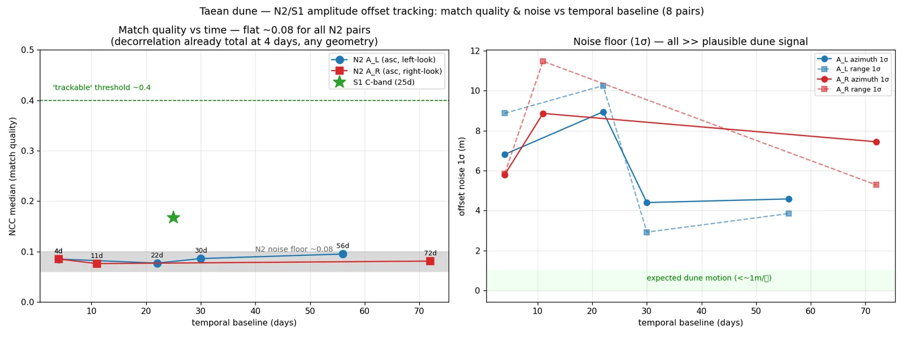
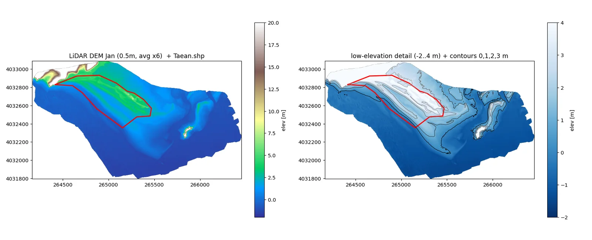
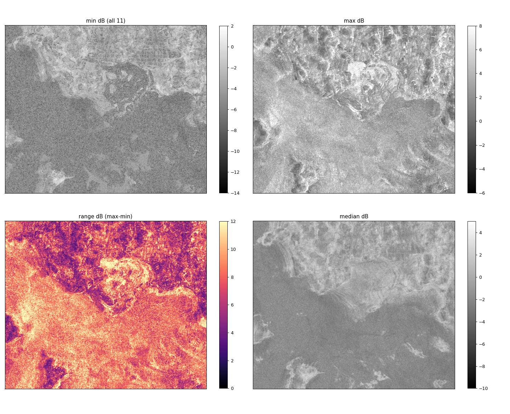
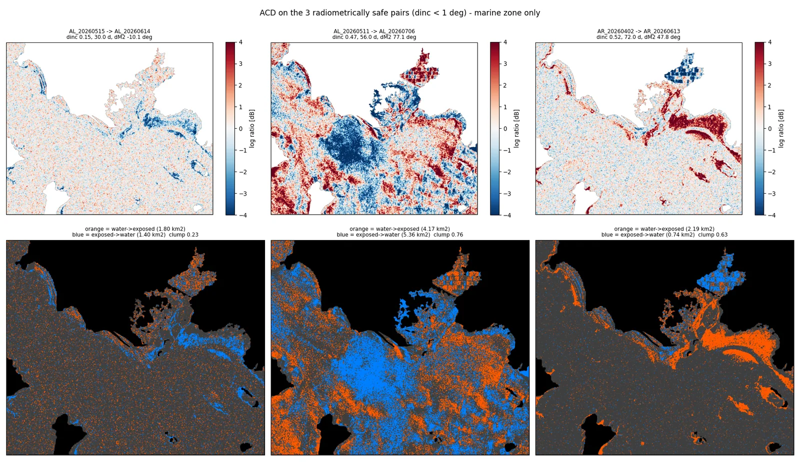
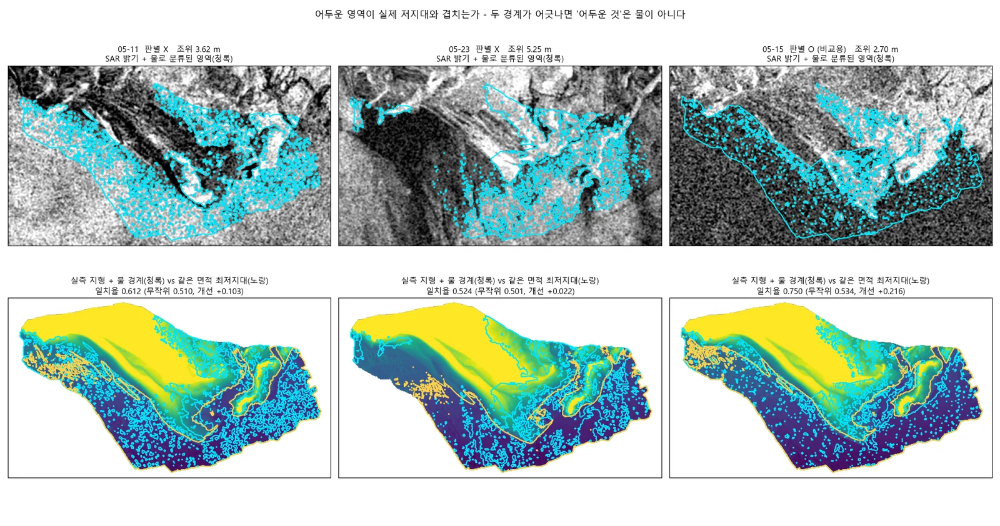

← 프로젝트 목록← All projects
해안사구 다중기법 SAR 분석 (InSAR · OT · ACD)Coastal Dune Monitoring with Three SAR Techniques
국산 X-band와 Sentinel-1 C-band에 InSAR·오프셋트래킹·진폭변화탐지 세 기법을 동일 절차로 교차 적용했다. 결론은 솔직하다 — 사구에서 X-band 위상은 수 일 만에 탈상관한다.Applied three techniques — phase InSAR, offset tracking and amplitude change detection — identically across a domestic X-band sensor and Sentinel-1 C-band. The honest finding: over dunes, X-band phase decorrelates within days.
배경 · 목표Background
- 해안국립공원 사구 지역의 지표 변화를 SAR로 감시할 수 있는지 검토하는 과제였다.
- 국산 위성(X-band)과 Sentinel-1(C-band)을 같은 절차로 비교해, 국산 위성의 실제 활용 가능 범위를 가늠하는 것이 핵심이었다.
- 선행 검토에서 Sentinel-1 DInSAR 결과가 뚜렷하지 않았기 때문에, 위상 외 기법까지 함께 봐야 했다.
- The task was to assess whether SAR can monitor surface change over the dunes of a coastal national park.
- The core question was how far the domestic X-band satellite actually gets, compared like-for-like against Sentinel-1.
- Earlier Sentinel-1 DInSAR had produced inconclusive results, so techniques beyond phase had to be considered too.
방법Method
- 먼저 페어 적합성을 평가했다 — 동일 궤도·룩 방향, 입사각 차(dinc), 수직베이스라인 비(Bperp/Bcrit), 시간차. 폴리곤을 덮는 유효 InSAR 페어는 단 하나뿐이었다.
- InSAR(위상): 국산 위성은 자체 파이썬 파이프라인, Sentinel-1은 공식 ISCE2 topsApp 2.6.3. 언래핑은 snaphu.
- Offset Tracking: 정규화 상호상관(NCC)으로 정합하고, 상관 피크를 포물선 보간해 1/10~1/20 화소까지 방위·거리 이동량을 추정했다.
- ACD(진폭변화탐지): 진폭 추출 → 멀티룩 → 지오코딩 → 로그비 dB 산출.
- 세 기법 공통으로 DEM 기반 해수역 마스킹을 적용했다.
- 부호 규약을 합성신호(알고 있는 이동을 주입)로 검증했다 — OT의 range(+)는 위성에서 멀어짐, InSAR LOS(+)는 가까워짐으로 서로 반대다.
- 갯벌 조수 관측: LiDAR DEM·정사영상과 동일한 5 m 격자에서 조위별 침수·노출을 비교했다.
- Started with pair suitability: same orbit and look direction, incidence-angle difference, perpendicular-to-critical baseline ratio, and temporal gap. Exactly one valid InSAR pair covered the polygon.
- Phase InSAR: a custom Python pipeline for the domestic sensor, official ISCE2 topsApp 2.6.3 for Sentinel-1, unwrapping with snaphu.
- Offset tracking: normalised cross-correlation matching, with parabolic interpolation of the correlation peak to estimate azimuth and range shifts down to 1/10–1/20 of a pixel.
- Amplitude change detection: amplitude extraction, multilooking, geocoding, then a log-ratio in dB.
- DEM-based sea masking applied identically across all three techniques.
- Verified sign conventions by injecting a known synthetic displacement — offset-tracking range positive means moving away from the sensor, while InSAR LOS positive means moving toward it; they are opposite.
- Tidal-flat observation: compared inundation and exposure by tide level on the same 5 m grid as the LiDAR DEM and orthophoto.
결과Results
- InSAR · Offset Tracking · ACD 세 기법을 X-band와 C-band 양쪽에 동일 절차로 적용한 통합 프레임워크 완성
- Sentinel-1에서 처리 초·중반(정합·평지/지형 위상 제거·필터링)이 ISCE2와 일치함을 확인 — 자체 코드 검증
- X-band 위상은 사구에서 수 일 내 탈상관. 30~35일 간격 위상 InSAR는 성립 불가
- 세 기법 중 진폭변화탐지(ACD)만 구조가 있는 관측을 제공
- 갯벌 조수 관측: 보유 처리레벨(1A/1B/1C)에는 후방산란계수가 없어 시점 간 절대 dB 비교 불가. 설계상 Level 1D에서만 제공된다는 것을 문서로 확인
- X-band 개방수면은 −20 dB 이하인데 이 센서의 잡음등가 산란계수는 −16~−17 dB — 즉 물이 설계상 잡음바닥 아래에 있다. 실측 물−육상 대비 중앙값 −2.5 dB로 물리 기대치(−13~−20 dB)에 10~17 dB 못 미침
- A unified framework applying all three techniques identically to both X-band and C-band.
- Confirmed that the early and middle stages on Sentinel-1 — coregistration, flat-earth and topographic phase removal, filtering — match ISCE2, validating the custom code.
- X-band phase decorrelates over dunes within days; phase InSAR at a 30–35 day interval is simply not viable.
- Of the three techniques, only amplitude change detection yields a structured observation.
- Tidal flats: the held product levels (1A/1B/1C) contain no backscatter coefficient, so absolute dB cannot be compared across dates — confirmed from the specification that it is supplied only at Level 1D.
- X-band open water sits below −20 dB while this sensor's noise-equivalent sigma zero is −16 to −17 dB, so water is below the noise floor by design. Measured water-to-land contrast has a median of −2.5 dB against a physical expectation of −13 to −20 dB, falling short by 10–17 dB.










배운 점 · 한계What I learned · Limitations
- '코드가 맞는가'와 '결과가 좋은가'는 다른 질문이다. 결과가 약한 것은 X-band가 사구에서 탈상관하는 물리적 한계 때문이고, 같은 데이터를 ISCE2에 넣어도 같다. 이 둘을 분리해 설명하는 법을 익혔다.
- 자체 코드의 신뢰성을 세 층으로 나눠 논증했다 — ① 기하 모델의 정합성(잔차를 지오이드로 귀속), ② 알고리즘의 표준성(새로 발명한 것 없음), ③ 외부 도구 대조. 그리고 TOPS 정밀 방위정합은 간이 구현이라 최종 언래핑까지 ISCE2와 같다고는 주장하지 않았다. 한계를 먼저 밝히는 쪽이 신뢰를 만든다.
- 센서 사양서를 읽는 것이 데이터를 더 돌리는 것보다 빨랐다. 물이 안 보이는 이유를 잡음등가 산란계수 한 줄에서 찾았다.
- 결론을 '변위량'이 아니라 '국산 위성 처리 방법론 시연'으로 프레이밍하도록 권고했다. 데이터가 뒷받침하지 않는 주장을 하지 않는 것도 분석가의 일이다.
- 'Is the code right' and 'is the result good' are different questions. The weak result comes from X-band physically decorrelating over dunes — ISCE2 on the same data gives the same thing. I learned to argue those two apart.
- Argued the custom code's reliability in three layers: the geometry model's consistency (residuals attributable to the geoid), the standardness of the algorithms (nothing newly invented), and comparison against an external tool. And I did not claim parity with ISCE2 through final unwrapping, because the TOPS azimuth refinement is a simplified implementation. Stating the limit first is what builds trust.
- Reading the sensor specification beat running more data. The reason water was invisible turned out to be one line: the noise-equivalent sigma zero.
- Recommended framing the deliverable as a processing-methodology demonstration rather than a displacement measurement. Declining to claim what the data does not support is part of the job.
산출물Deliverables
- InSAR · OT · ACD 자체 파이썬 구현
- ISCE2 topsApp 처리 설정·산출물
- 처리 프로토콜 순서도
- 인터랙티브 통합 결과 맵
- 인수인계 문서 및 방법론 답변자료
- Custom Python implementations of InSAR, offset tracking and ACD
- ISCE2 topsApp configuration and products
- Processing protocol diagram
- Interactive combined results map
- Handover document and methodology Q&A
원본 보고서와 발표자료는 사내 자료로 공개하지 않습니다. 분석 코드는 GitHub에 정리되어 있습니다.Source reports and decks are internal and not published here. Analysis code is organised on GitHub.